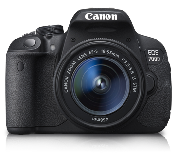

Canon EOS 700D - Đam Mê Chụp Ảnh

Canon EOS 700D
Một trong những ước mơ từ nhỏ của tôi là được sở hữu một chiếc máy ảnh kỹ thuật số DSLR (Digital Single-Lens Reflex), nhưng vì gia đình tôi không mấy khá giả, nên tôi không dám đòi hỏi. Khi lớn rồi cho đến hiện tại, dù là sinh viên năm hai rồi nhưng tôi vẫn chưa một lần cầm trên tay một chiếc máy ảnh để thử nghiệm. Nhưng bây giờ tôi đã quyết tâm rồi, nhất định phải sở hữu một chiếc máy ảnh, nó sẽ mang lại cho chúng ta một thứ cảm xúc khó mà có thể tả được, bạn có thể chụp những tấm ảnh tuyệt đẹp, đến những nơi tuyệt vời, gặp gỡ những con người mới lạ, hiểu rõ hơn cuộc sống xung quanh chúng ta. Đó là những điều tôi hình dung ra khi có mình có thể ngao du đó đây cùng chiếc máy ảnh của mình, bạn sẽ thấy cuộc sống xung quanh nhiều màu sắc như thế nào, một cảm xúc hạnh phúc đến lạ thường. Tôi sẽ hỏi xin bố mẹ xem có thể cho mình một khoản để sắm một em Canon EOS 700D về không, nếu không được tôi đành phải làm thêm một việc gì đó như gia sư chẳng hạn để tích góp tiền rồi sắm em nó. Nghĩ tới đó thôi cũng khiến tôi hạnh phúc lắm rồi vì mình có mục đích để thưc hiện để phấn đấu đạt được.
Tôi có tìm hiểu qua một số hãng như Nikon, Sony, Canon... Và tôi đã quyết định sẽ chọn mua một chiếc thuộc hãng Canon, bởi cộng đồng người dùng hãng này ở Việt Nam khá nhiều, cộng với đó hãng chỉ phân phối sản phẩm về Việt Nam qua công ty Lê Bảo Minh, một showroom rất uy tín. Nên việc lựa chọn có đúng hãng, sợ là hàng giả, hàng nhái hay không, không phải lăn tăn nữa. Một phần tôi cũng chỉ biết một chút về thị trường máy ảnh nên chẳng rành lắm nên cũng nên cẩn thận một chút.
EOS 700D Kit (EF S18-55 IS STM)
EOS 700D cung cấp những tính năng cơ bản và đầy đủ, là một trong những máy ảnh DSLR tầm trung tốt nhất với chất lượng hình ảnh cao, chức năng đa dạng của chế độ chụp AF ngắm hình trực tiếp và quay phim. Màn hình cảm ứng điện dung đa điểm rõ nét LCD II xoay linh hoạt với thiết kế có Chế độ xoay có thể xoay 360 độ và chế độ bộ lọc ảnh sáng tạo sẽ thổi bùng cảm hứng sáng tạo của bạn. Hệ thống tự động lấy nét với 9 điểm căng nét chéo Chụp liên tục (5 fps) Màn hình LCD II rõ nét xoay linh hoạt.

Hệ thống lấy nét tự động với 9 điểm căng nét chéo
EOS 700D được trang bị tính năng tự động lấy nét đảm bảo lấy nét tự động nhanh chóng, chính xác và tiên tục mọi lúc. Khi chụp hình qua ống ngắm, EOS 700D nâng cấp tự động lấy nét với 9 điểm căng nét chéo (bao gồm điểm trung tâm hỗ trợ f/2.8 có khả năng căng nét chữ thập chéo độ chính xác cao) cho độ căng nét chính xác dù chụp hình nằm ngang hay dọc. Hệ thống AI Servo AF xác định và duy trì điểm căng nét chính xác.
ISO 100-12800 và có thể lên tới 25600 ở chế độ H
Nhờ bộ xử lý hình ảnh DIGIC 5, EOS 700D có dải ISO mở rộng từ 100–12800 (và có thể lên đến 25600 ở chế độ H) cho phép chụp hình ở nơi ít ánh sáng mà không cần đèn flash. Cùng với ống kính EF hoặc EF-S với Công nghệ ổn định hình ảnh quang học, EOS 700D cho bạn những bức hình thật tuyệt vời ngay cả khi điều kiện ánh sáng yếu.
Lọc ảnh sáng tạo với Chế độ chụp ngắm trực tiếp
EOS 700D được trang bị bảy bộ lọc ảnh khác nhau giúp thay đổi hiệu ứng bất kì hình ảnh nào. Bộ lọc ảnh sáng tạo bao gồm Hiệu ứng mắt cá, Hiệu ứng máy ảnh đồ chơi, Hạt đen trắng, chụp lấy nét mềm, Hiệu ứng thu nhỏ, Hiệu ứng tô đậm và Hiệu ứng màu nước. Các bộ lọc này có thể sử dụng sau khi chụp hình, vì vậy bạn có thể dễ dàng thử nhiều hiệu ứng khác nhau trên cùng một tấm hình.